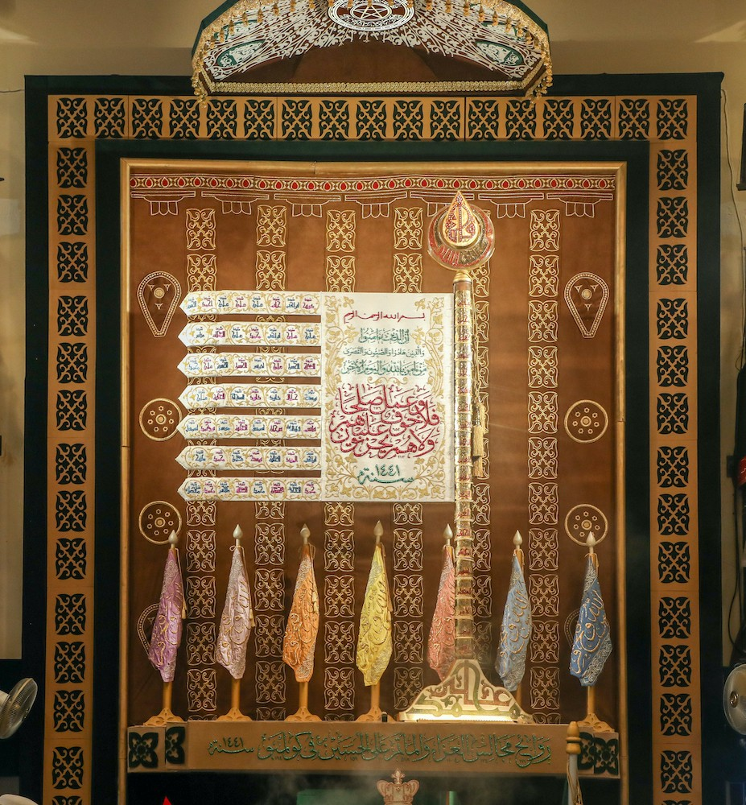

<div class="search-result-section" >
  <div class="container">
    <div class="row">
      <div class="search-main-head">
        <h1 class="text-primary text-center font-serif inner-head">{{config.totalItems}} Bayaan</h1>
      </div>
      <form class="col-sm-10 offset-sm-1 search-form" [formGroup]="searchForm"  novalidate>
        <div class="input-group">
          <span class="input-group-text" id="addon-wrapping"></span>
          <div class="ng-autocomplete font-kanz-ul-marjan font-25">
            <ng-autocomplete [data]="autoData" [debounceTime]="'600'" [isLoading]="isLoading"
              [searchKeyword]="keyword" placeholder="Search {{name}}"
              (inputChanged)='onChangeSearch($event)' historyIdentifier="autoData" [itemTemplate]="itemTemplate"
              [notFoundTemplate]="notFoundTemplate" id="search_input"
              class="city-search ui-autocomplete-input font-kanz-ul-marjan font-25" formControlName="searchText"
              (inputCleared)="closed()">
            </ng-autocomplete>
          
            <div class="search-dropdown" [hidden]="!(autoData?.length > 0)">
              <ul>
                <ng-template #itemTemplate let-item>

                  <a class="font-kanz-ul-marjan font-25" [hidden]="!(autoData?.length > 0)">
                    <p class="font-kanz-ul-marjan text-primary" [innerHTML]="item.Text | highlight : toHighlight"></p>
                  </a>
                </ng-template>
              </ul>
            </div>
            <ng-template #notFoundTemplate let-notFound>
              <div class="font-kanz-ul-marjan font-25" [innerHTML]="notFound" [hidden]="!isNotFound"></div>
            </ng-template>
     
            <button class="btn btn-primary btn-lg" type="submit" id="button-addon2"
            (click)="searchBayanData()">Search</button>

          </div>
        </div>
      </form>
      <div class="main-content-block">
        <div class="bayaan-tabs" *ngIf="isSearchText === false">
          <ul class="nav nav-tabs" role="tablist">
            <li class="nav-item">
              <a class="nav-link active" data-bs-toggle="tab" href="#ashara"
                (click)="togglePaginationDisplay('show') ; getBayanList('Ashara Mubaraka')"   role="tab">Ashara Mubaraka</a>
            </li>
            <li class="nav-item">
              <a class="nav-link" data-bs-toggle="tab" (click)="togglePaginationDisplay('hide') ;  getBayanList('Miqaat Mubarak')" href="#miqaat"
                role="tab">Miqaat Mubarak</a>
            </li>
          </ul><!-- Tab panes -->
          <div class="tab-content">
            <div class="tab-pane pb-100 active" id="ashara" role="tabpanel">
              <div class="bayaan-grid-wrap">
                <div class="bayaan-grid">
                  <ng-container *ngFor="let bayan of bayanListData  | paginate: config ;let indx = index"
                    (click)="selectEvent(bayan)">
                    <a (click)="navigateToDetailPage(bayan.id)">
                      <div class="bayaan-card">
                        <div class="bayaan-img">
                          
                        </div>
                        <div class="bayaan-title">
                          <p [innerHtml]="toArabicNumber(bayan.year) + '—' + bayan.location "></p>
                        </div>
                      </div>
                    </a>
                  </ng-container>
                </div>
              </div>
            </div>
            <div class="tab-pane" id="miqaat" role="tabpanel">
              <div class="row justify-content-center equal-height admin-head-wrap flex-row-reverse">
                <div class="col-lg-4 col-md-4 col-sm-12 col-12 bait-list">
                  <div class="admin-step-form-wrap bait-list-v-2 overflow-hddn">
                    <div class="step-form-header">
                      <h3 class="form-title">Select Year</h3>
                    </div>
                    <div class="step-form-body">
                      <div class="bait-list-inner bayaan-list">
                        <ul>
                          <ng-container *ngFor="let yearInfo of bayanListData ">
                            <!-- (click)="switchMiqaatYear(yearInfo.year)" -->
                            <li [ngClass]="{'active' : yearInfo.year == miqaat_year}" (click)="getAsharaList(yearInfo.id)"
                              class="bait-list-item active" draggable="true">
                              {{yearInfo.year}} ({{yearInfo.subArticleCount}} Bayaans)
                            </li>
                          </ng-container>
                        </ul>
                      </div>
                    </div>
                  </div>
                </div>
                <div class="col-12 d-sm-none">
                  <a  (click)="toggleMobileMenu()" class="bait-list-mobile text-primary fs-16 d-block"><strong>Select
                      Year</strong></a>
                </div>
                <div class="col-lg-8 col-md-8 col-sm-12 col-12">
                  <div class="admin-step-form-wrap">
                    <div class="step-form-header miqaat-header">
                      <h3 class="form-title">Miqaats</h3>
                      <div class="dropdown">
                        <button class="btn btn-secondary dropdown-toggle" type="button" id="dropdownMenuButton1"
                          data-bs-toggle="dropdown" aria-expanded="false">
                          {{miqaatSelectedMonth}}
                        </button>
                        <ul class="dropdown-menu miqaat-month" aria-labelledby="dropdownMenuButton1">
                          <li><a class="dropdown-item"  (click)="getAsharaList()">All Months</a></li>
                          <li *ngFor="let item of subArticles ; let i=index">
                            <a class="dropdown-item" [routerLink]="" (click)="filterByMonth(item?.month)">All Months</a>
                            <a class="dropdown-item" [routerLink]="" (click)="filterByMonth(item?.month)">{{item?.month}}</a>
                          </li>
                        </ul>
                      </div>

                    </div>
                    <div class="bayaan-bg border-b-r">
                      <div class="step-form-body">
                        <div class="row">
                          <div class="col-12">
                            <ng-container *ngFor="let miqaatBayan of subArticles ; let i=index">
                              <div class="miqaat-bayaan-head font-kanz-ul-marjan">
                                <span>
                                  {{miqaatBayan?.month}}
                                </span>
                              </div>
                              <ul class="miqaat-bayaan-list">
                                <li *ngFor="let miq of miqaatBayan.title" class="font-kanz-ul-marjan">
                                  <a (click)="navigateToDetailPage(miq?.id)">{{miq.title}}</a>
                                </li>
                              </ul>
                            </ng-container>
                          </div>
                        </div>
                      </div>
                    </div>

                  </div>
                </div>
              </div>

            </div>
          </div>
        </div>
      
        <!-- // Search Portion -->

        <ul class="sukhn-list" *ngIf="config.categoryName == 'Miqaat Mubarak' && isSearchText == true">
          <li class="cp" *ngFor="let translation of translations  | paginate: config ;let indx = index"
            (click)="selectEvent(translation, indx)">
            <a class="d-flex" (click)="navigateToDetailPage(translation?.subArticle?.id)">
              <div class="sukhn-list-icon fs-24 text-white">
                <p class="font-kanz-ul-marjan">{{(indx+1) + ((config.currentPage-1) * config.itemsPerPage)}}</p>
              </div>
              <div class="sukhn-list-block">
                <p class="sukhn-arabi fs-32"
                  [ngClass]="{'font-kanz-ul-marjan' : qType != translation.VerseType, 'font-amiri' : qType == translation.VerseType}"
                  [innerHTML]="translation.arabic"></p>
                <p class="sukhn-lsd font-kanz-ul-marjan fs-20"
                  [ngClass]="{'font-kanz-ul-marjan' : qType != translation.VerseType, 'fs-20' : qType != translation.VerseType}"
                  [innerHTML]="translation.gujrati"></p>
                <p class="fs-16 font-serif sukhn-english text-primary" [innerHTML]="translation.english">
                </p>
              </div>
              <span class="edit cp" (click)="edit(translation.Id)" *ngIf="isValidUser"> Edit</span>
            </a>
          </li>
        </ul>

        <ul class="sukhn-list" *ngIf="config.categoryName == 'Ashara Mubaraka' && isSearchText == true">
          <li class="cp" *ngFor="let translation of translations  | paginate: config ;let indx = index"
            (click)="selectEvent(translation, indx)">
            <a class="d-flex" (click)="navigateToDetailPage(translation?.subArticle?.id)">
              <div class="sukhn-list-icon fs-24 text-white">
                <p class="font-kanz-ul-marjan">{{(indx+1) + ((config.currentPage-1) * config.itemsPerPage)}}</p>
              </div>
              <div class="sukhn-list-block">
                <p class="sukhn-arabi fs-32"
                  [ngClass]="{'font-kanz-ul-marjan' : qType != translation.VerseType, 'font-amiri' : qType == translation.VerseType}"
                  [innerHTML]="translation.arabic"></p>
                <p class="sukhn-lsd font-kanz-ul-marjan fs-20"
                  [ngClass]="{'font-kanz-ul-marjan' : qType != translation.VerseType, 'fs-20' : qType != translation.VerseType}"
                  [innerHTML]="translation.gujrati"></p>
                <p class="fs-16 font-serif sukhn-english text-primary" [innerHTML]="translation.english">
                </p>
              </div>
              <span class="edit cp" (click)="edit(translation.Id)" *ngIf="isValidUser"> Edit</span>
            </a>
          </li>
        </ul>

        <pagination-template *ngIf="isShowPagination" #p="paginationApi" [id]="config.id"
        (pageChange)="onPageChange($event)">
        <div class="sukhn-pagination">
          <nav aria-label="Page navigation example">
            <ul class="pagination">
              <li> <a class="prev-button cp" [class.inactiveLink]="p.isFirstPage()" (click)="p.previous()">
                  < </a>
              </li>
              <li class="page-item">
                <a class="page-link cp" *ngFor="let page of p.pages"
                  [class.current]="p.getCurrent() === page.value" (click)="p.setCurrent(page.value)">
                  <span [class.inactiveLink]="!(config.totalItems && config.totalItems > 0)" class="li-span"
                    *ngIf="p.getCurrent() !== page.value">{{ page.label }}</span>
                  <span [class.inactiveLink]="!(config.totalItems && config.totalItems > 0)" class="li-span"
                    *ngIf="p.getCurrent() === page.value">{{ page.label }}</span>
                </a>
              </li>
              <li><a (click)="p.next()" [class.inactiveLink]="p.isLastPage()" class="next-button cp">
                  >
                </a> </li>
            </ul>
          </nav>
        </div>
      </pagination-template>


      <!-- ========= View Bait List On Mobile ============= -->
<div  [class.active]="isShowMobileMenu" class="view-baits-mobile d-sm-none">
  <div class="bottom-sheet-header">
      <h4 class="text-primary mb-0">Select Year</h4>
      <a (click)="toggleMobileMenu()" class="close-sheet"></a>
  </div>

  <div class="bait-list-inner bayaan-list">
      <ul>
        <ng-container *ngFor="let yearInfo of bayanListData ">
          <li [ngClass]="{'active' : yearInfo.year == miqaat_year}" (click)="getAsharaList(yearInfo.id)"
            class="bait-list-item active" draggable="true">
            {{yearInfo.year}} ({{yearInfo.subArticleCount}} Bayaans)
          </li>
        </ng-container>
      </ul>
  </div>
</div>
      </div>
    </div>
  </div>
</div>


